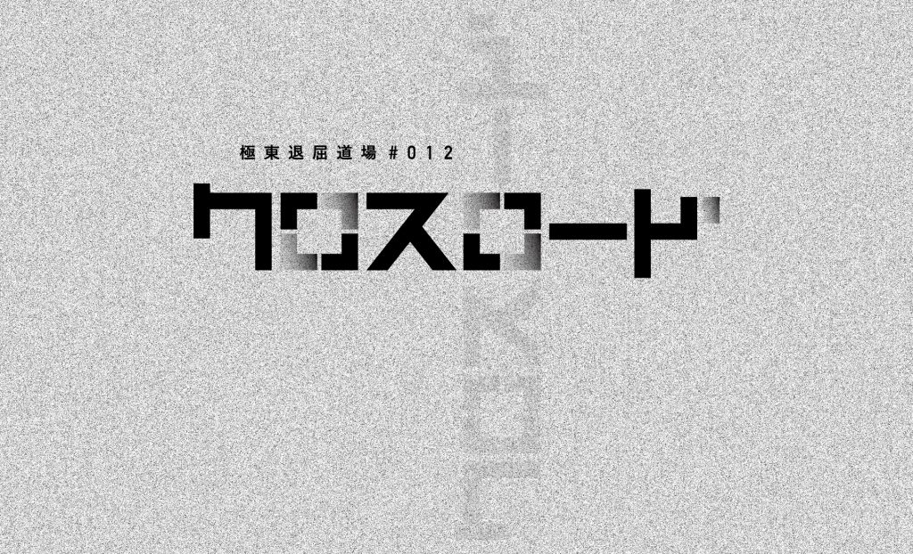

公演概要
日程
2022年12月16日（金）～18日（日）
12/16（金）14：00/19：00
12/17（土）13：00/17：00
12/18（日）13：00/17：00
受付・開場は、開演の40分前開始
作・演出
林慎一郎
出演
石原菜々子（kondaba） 井上和也 小竹立原 加藤智之（DanieLonely） 小坂浩之 橋本浩明
会場
山本能楽堂（大阪市中央区徳井町1-3-6 ℡06-6943-9454）
チケット料金
日時指定・全席自由
| 一般前売 | 3200円 |
| 一般当日 | 3500円 |
| ペアチケット | 5500円 |
| ユース割引（22歳以下） | 2000円 |
| ２回目以降の観劇 | 0円（ＷＥＢ予約のみ） |
※お並びいただいた順番にご入場いただきます。
※ユース割引は、要身分証明書提示
※未就学児童の御入場はご遠慮いただいております。
主催・問合
極東退屈道場
e-mail：kyokutoutaikutsu@gmail.com
webサイト：http://taikutsu.info/
お問い合わせフォームはこちら
スタッフ
舞台美術デザイン／柴田隆弘
照明／魚森理恵
音響／あなみふみ
舞台監督／古谷晃一郎
衣装／大野知英
制作協力／さかいひろこworks
制作／奈良歩
主催：極東退屈道場
助成：
芸術文化振興基金助成事業
大阪府芸術文化振興事業
稽古場協力：辰野株式会社 株式会社アートローグ
協力：公益財団法人 山本能楽堂


作品概要
江之子島での３年間のクリエーションを踏まえ、今回は能楽堂での公演となります。
極東退屈道場は一貫して都市の有様に注目して演劇作品を作ってきました。
その中でも、街を歩き、旅する目線を言葉で描写する方法に拘ってきました。
実は、それは能楽における「道行」という語りに想を得ています。
能楽堂で上演する本作品のモチーフは「道行」。特に「難民」の道行です。
この３年はenocoというロケーションを手に入れ、かつての大阪の玄関口から大阪を俯瞰する作品づくりを続けました。
昨年は、それまで調べを進めたタワーマンション増築による人口増加と、都市の有様の変容とともに大きく数を減らす電話ボックスをその形状の類似性から関連づけコロナ禍の都市型コミュニケーションを考察しました。
作品は、行方知れずになった大切な人を探し続け、「風の電話」にたどり着く男の姿が終景となりました。
彼の素性は作中でも明らかにされることなく終わりました。
あれは何者なのかという問いかけは終演後たくさんもらいました。
彼は、自らにまつわるメタデータを全て剥ぎ取られてしまった人です。「難民」です。
コロナ禍で我々は再び「鎖国」と揶揄され、同じ空の下で戦争も起きました。
難民の前に接頭語をつければ、多くの難民が生まれます。
都市という名づけえぬものを彷徨う人々は何者なのか。
故郷を失い、家を失い、血縁を失い、名を失ってしまった人たちは、何者でもない。
ただ、語ることで何者かになれるのではないか、語ることでしか何者かになれないのではないか、そう思います。
能の作り物に、萩小屋または萩戸と呼ばれる直方体の作り物があります。
竹で骨組みを作り、中に人が一人入れる大きさに設える。 四方を柴のついた戸で囲い、その粗末な感じが、あばら家や寝室を表すのに用いられます。
それは前回使った電話ボックスがメタモルフォーゼした姿です。
難民とは旅人です。大阪にたどり着いた、もしくは暮らす「難民」の言葉を語り起こしてみようと思います。
それは、大阪が「何者」であるか。についても浮き上がらせるのではないか。そう考えています。
林慎一郎
出演

石原菜々子（kondaba）
東京都出身。学生演劇を経て、2012年劇団維新派入団。維新派解散後、金子仁司と「kondaba」を旗揚げ。劇団以外にも精力的に外部出演をこなす。林作品は、前回「LG20/21クロニクル」より参加。

井上和也
愛知県出身。2011年劇団維新派入団。「風景画」以降の作品に出演。維新派解散後は、庭劇団ペニノなど出演。今回、初めての林作品への参加となる。

小竹立原
愛知県出身。大阪に進学し、演劇に出会い、卒業後も継続。近年は極東退屈道場に多数出演。代表作は「サブウェイ」「タイムズ」など。

加藤智之（DanieLonely）
岐阜県出身。高校で演劇と出会い25歳の時France_panに入団 その後永見陽幸らと「DanieLonely」を結成。現在は、劇団活動はお休み中であるが、客演多数。林作品は、「百式サクセション」より参加。

小坂浩之
石川県出身。初舞台は学生劇団で上演した「ゼンダ城の虜」。桃園会に1999年から2009年まで所属し、以後フリーランスで活動。演劇だけでなく、ダンスやパフォーマンスなど横断的に出演している。林作品は「延髄がギリです。」以降、断続的に出演。

橋本浩明
愛知県出身。学生劇団を経て、23歳で水の会メンバーとなる。その後、燐光群を経てフリーへ。林演出作品には、大阪大学人文学研究所・大阪大学総合博物館アート人材育成プログラム「中之島デリバティブ」より2度目の参加となる。
前回公演「LG20/21クロニクル」


“ソコハカ”の町にはたくさんの「ひゃっかいだてのいえ」が立ち並び、
地上を動くのは、リュックを背負った黒づくめのデリバリーの男たちだけだ。
「ひゃっかいだてのいえ」の一つに暮らす小学生の女の子が姿を消した。
その後、フリマサイトに彼女が身につけていたものが、一つづつ法外な値段で出品され始める。
犯人と思しき男からの電話が、「全て買い集めれば娘は帰ってくる」と告げる・・・。
大阪の町に林立し始めたタワーマンションと、町から姿を消し始めた公衆電話ボックスに想を得て、住人の膨大な口コミ情報をもとに創作した作品。
一階と最上階に別れた劇場を電話ボックスによる通話で繋ぎ、俳優が行き来する。
いずれかの劇場に振り分けられた観客は、互いに異なった側面から作品を鑑賞することになる。
リンク
極東退屈道場
お問い合わせ
極東退屈道場
e-mail: kyokutoutaikutsu@gmail.com
